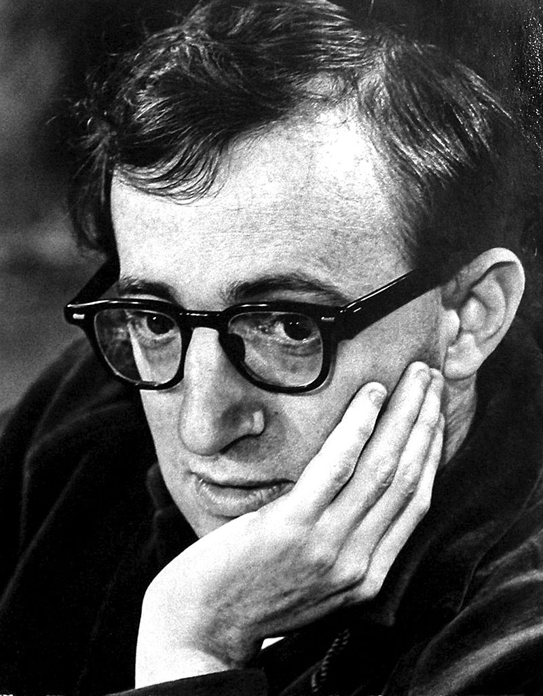
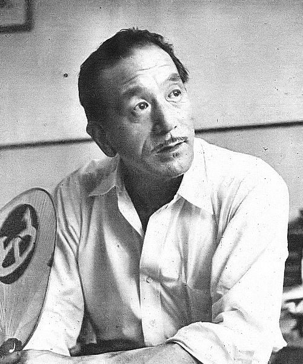
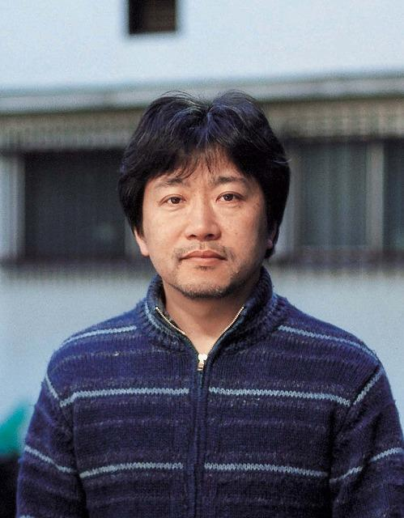

Woody Allen
Woody Allen is an American filmmaker known for his witty and introspective storytelling. He has directed over 50 films throughout his career. His works often explore human relationships, existential dilemmas, and urban life. Some of his famous films include *Annie Hall* and *Manhattan*. Allen has won several Academy Awards for his writing and directing. Despite controversies, his influence on modern cinema remains significant.
Yasujirō Ozu
Yasujirō Ozu was a legendary Japanese filmmaker celebrated for his subtle yet powerful storytelling. His works often revolve around family dynamics and generational conflicts. Ozu is renowned for his unique camera placement and restrained style. Films like *Tokyo Story* are considered masterpieces of world cinema. His work reflects traditional Japanese values while addressing universal themes. Ozu's influence on global filmmakers is immense.
Hirokazu Kore-eda
Hirokazu Kore-eda is a contemporary Japanese director known for his heartfelt and humanistic films. His stories often explore family bonds, identity, and loss. Kore-eda's works, such as *Shoplifters*, have won numerous international awards. He is known for his naturalistic approach to filmmaking. Kore-eda's ability to capture the essence of ordinary life sets him apart. His films are celebrated for their emotional depth and universal appeal.